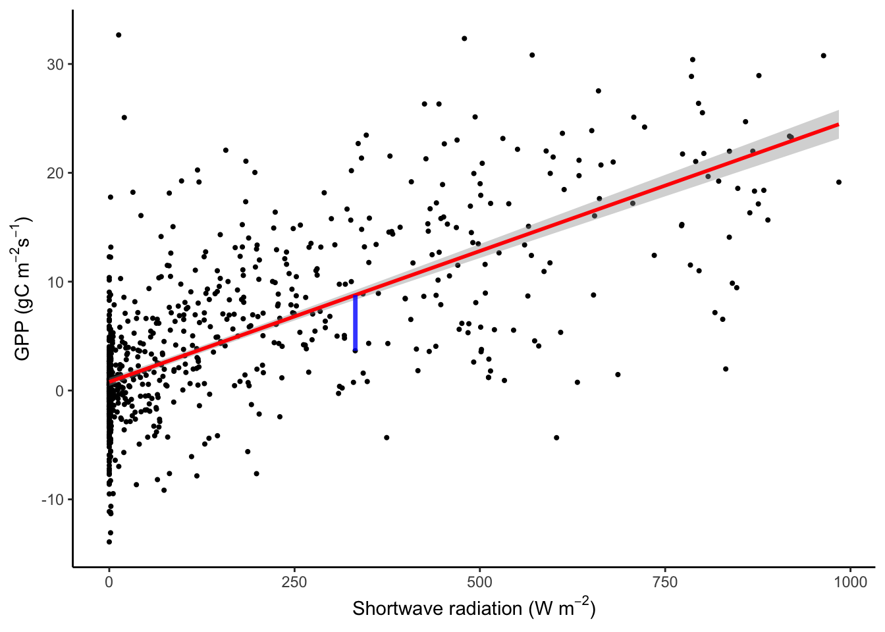
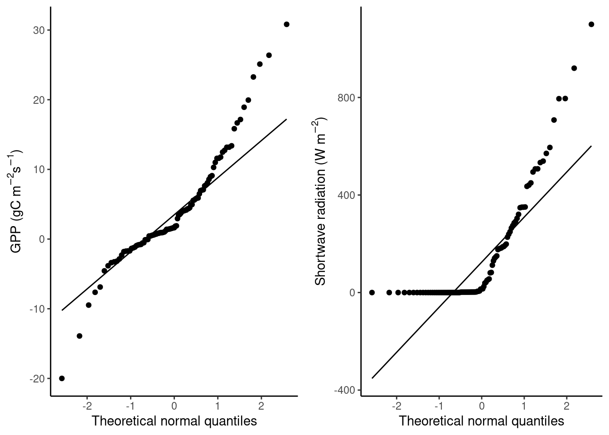
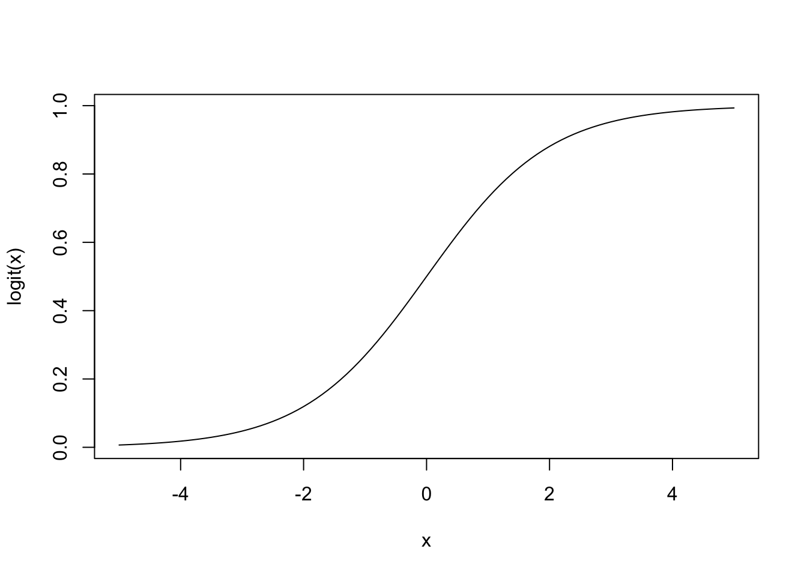
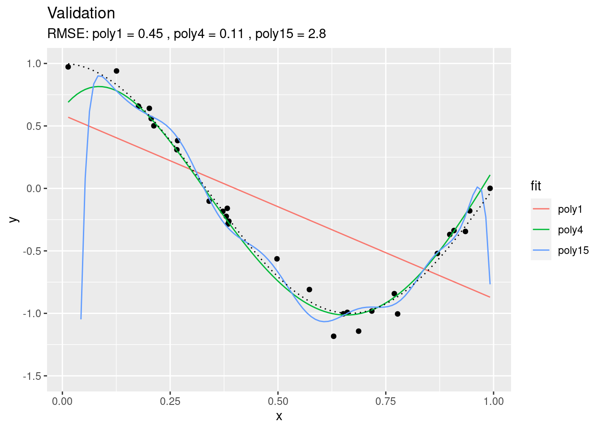
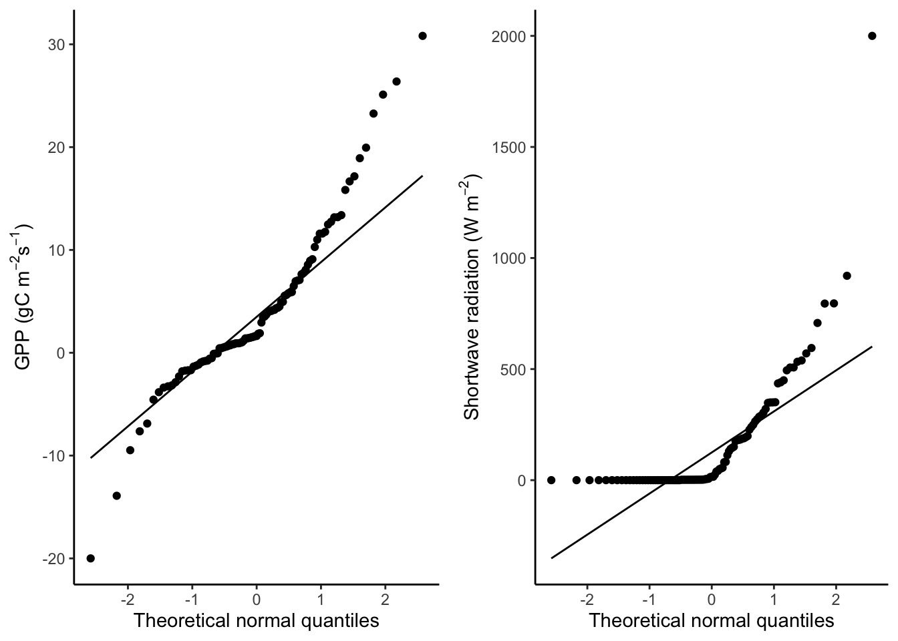

Chapter 9 Supervised machine learning
Chapter lead author: Benjamin Stocker
- Lecture (Beni): Overfitting, training, and cross-validation (link)
- K nearest neighbour models
- Data splitting
- Preprocessing, standardization, imputation, dimension reduction, as part of the model training workflow
- formula notation, recipes, generic train()
- Training and loss function
- Hyperparameters
- Resampling
- Performance assessment: Exercise comparing performance on test set of linear regression and KNN with different hyperparameter choices (like this), discuss link to overfitting example
9.1 Learning objectives
In this Chapter, we use ecosystem flux data and parallel measurements of meteorological variables to model ecosystem gross primary production (the ecosystem-level CO2 uptake by photosynthesis). These data and prediction task is used to introduce fundamental methods of machine learning (data preprocessing, data splitting, model formulation, and model training) and their implementations in R. After this course, you will …
- Understand how overfitting models can happen and how it can be avoided.
- Implement a typical workflow using a machine learning model for a supervised regression problem.
- Evaluate the power of the model.
Contents of this Chapter are inspired by the excellent book Hands-On Machine Learning in R by Boehmke & Greenwell.
9.2 Tutorial
9.2.1 Required packages
use_pkgs <- c("dplyr", "tidyr", "readr", "ggplot2", "caret", "yardstick", "lubridate", "rsample", "recipes", "modelr", "forcats")
new_pkgs <- use_pkgs[!(use_pkgs %in% installed.packages()[, "Package"])]
if (length(new_pkgs) > 0) install.packages(new_pkgs)## Retrieving 'https://mran.microsoft.com/snapshot/2023-01-08/bin/macosx/contrib/4.2/caret_6.0-93.tgz' ...
## OK [downloaded 3.4 Mb in 0.9 secs]
## Retrieving 'https://mran.microsoft.com/snapshot/2023-01-08/bin/macosx/contrib/4.2/e1071_1.7-12.tgz' ...
## OK [downloaded 656.4 Kb in 0.5 secs]
## Retrieving 'https://mran.microsoft.com/snapshot/2023-01-08/bin/macosx/contrib/4.2/proxy_0.4-27.tgz' ...
## OK [downloaded 186 Kb in 0.3 secs]
## Retrieving 'https://mran.microsoft.com/snapshot/2023-01-08/bin/macosx/contrib/4.2/foreach_1.5.2.tgz' ...
## OK [downloaded 133.1 Kb in 0.3 secs]
## Retrieving 'https://mran.microsoft.com/snapshot/2023-01-08/bin/macosx/contrib/4.2/iterators_1.0.14.tgz' ...
## OK [downloaded 337.3 Kb in 0.4 secs]
## Retrieving 'https://mran.microsoft.com/snapshot/2023-01-08/bin/macosx/contrib/4.2/ModelMetrics_1.2.2.2.tgz' ...
## OK [downloaded 544.6 Kb in 1.5 secs]
## Retrieving 'https://mran.microsoft.com/snapshot/2023-01-08/bin/macosx/contrib/4.2/plyr_1.8.8.tgz' ...
## OK [downloaded 991.5 Kb in 0.4 secs]
## Retrieving 'https://mran.microsoft.com/snapshot/2023-01-08/bin/macosx/contrib/4.2/pROC_1.18.0.tgz' ...
## OK [downloaded 1.1 Mb in 0.5 secs]
## Retrieving 'https://packagemanager.rstudio.com/cran/latest/src/contrib/recipes_1.0.4.tar.gz' ...
## OK [downloaded 782.1 Kb in 0.9 secs]
## Retrieving 'https://mran.microsoft.com/snapshot/2023-01-08/bin/macosx/contrib/4.2/clock_0.6.1.tgz' ...
## OK [downloaded 8.1 Mb in 0.7 secs]
## Retrieving 'https://mran.microsoft.com/snapshot/2023-01-08/bin/macosx/contrib/4.2/gower_1.0.1.tgz' ...
## OK [downloaded 209.3 Kb in 0.3 secs]
## Retrieving 'https://mran.microsoft.com/snapshot/2023-01-08/bin/macosx/contrib/4.2/hardhat_1.2.0.tgz' ...
## OK [downloaded 776.7 Kb in 0.4 secs]
## Retrieving 'https://mran.microsoft.com/snapshot/2023-01-08/bin/macosx/contrib/4.2/ipred_0.9-13.tgz' ...
## OK [downloaded 376 Kb in 0.5 secs]
## Retrieving 'https://mran.microsoft.com/snapshot/2023-01-08/bin/macosx/contrib/4.2/prodlim_2019.11.13.tgz' ...
## OK [downloaded 412.5 Kb in 0.4 secs]
## Retrieving 'https://packagemanager.rstudio.com/cran/latest/src/contrib/lava_1.7.1.tar.gz' ...
## OK [downloaded 1.2 Mb in 0.8 secs]
## Retrieving 'https://mran.microsoft.com/snapshot/2023-01-08/bin/macosx/contrib/4.2/future.apply_1.10.0.tgz' ...
## OK [downloaded 149.1 Kb in 0.3 secs]
## Retrieving 'https://mran.microsoft.com/snapshot/2023-01-08/bin/macosx/contrib/4.2/globals_0.16.2.tgz' ...
## OK [downloaded 102.7 Kb in 0.2 secs]
## Retrieving 'https://mran.microsoft.com/snapshot/2023-01-08/bin/macosx/contrib/4.2/future_1.30.0.tgz' ...
## OK [downloaded 612.1 Kb in 0.4 secs]
## Retrieving 'https://mran.microsoft.com/snapshot/2023-01-08/bin/macosx/contrib/4.2/listenv_0.9.0.tgz' ...
## OK [downloaded 102.5 Kb in 0.3 secs]
## Retrieving 'https://packagemanager.rstudio.com/cran/latest/src/contrib/parallelly_1.34.0.tar.gz' ...
## OK [downloaded 133.4 Kb in 0.7 secs]
## Retrieving 'https://mran.microsoft.com/snapshot/2023-01-08/bin/macosx/contrib/4.2/numDeriv_2016.8-1.1.tgz' ...
## OK [downloaded 110.6 Kb in 0.3 secs]
## Retrieving 'https://packagemanager.rstudio.com/cran/latest/src/contrib/progressr_0.13.0.tar.gz' ...
## OK [downloaded 204.4 Kb in 0.8 secs]
## Retrieving 'https://mran.microsoft.com/snapshot/2023-01-08/bin/macosx/contrib/4.2/SQUAREM_2021.1.tgz' ...
## OK [downloaded 172.4 Kb in 0.6 secs]
## Retrieving 'https://packagemanager.rstudio.com/cran/latest/src/contrib/timeDate_4022.108.tar.gz' ...
## OK [downloaded 284.5 Kb in 0.8 secs]
## Retrieving 'https://mran.microsoft.com/snapshot/2023-01-08/bin/macosx/contrib/4.2/reshape2_1.4.4.tgz' ...
## OK [downloaded 325.6 Kb in 0.4 secs]
## Retrieving 'https://mran.microsoft.com/snapshot/2023-01-08/bin/macosx/contrib/4.2/yardstick_1.1.0.tgz' ...
## OK [downloaded 829.6 Kb in 0.7 secs]
## Retrieving 'https://mran.microsoft.com/snapshot/2023-01-08/bin/macosx/contrib/4.2/rsample_1.1.1.tgz' ...
## OK [downloaded 485.6 Kb in 0.4 secs]
## Retrieving 'https://mran.microsoft.com/snapshot/2023-01-08/bin/macosx/contrib/4.2/furrr_0.3.1.tgz' ...
## OK [downloaded 994.3 Kb in 0.5 secs]
## Retrieving 'https://mran.microsoft.com/snapshot/2023-01-08/bin/macosx/contrib/4.2/slider_0.3.0.tgz' ...
## OK [downloaded 357.9 Kb in 0.4 secs]
## Retrieving 'https://mran.microsoft.com/snapshot/2023-01-08/bin/macosx/contrib/4.2/warp_0.2.0.tgz' ...
## OK [downloaded 101.1 Kb in 0.3 secs]
## Installing proxy [0.4-27] ...
## OK [installed binary]
## Moving proxy [0.4-27] into the cache ...
## OK [moved to cache in 1.4 milliseconds]
## Installing e1071 [1.7-12] ...
## OK [installed binary]
## Moving e1071 [1.7-12] into the cache ...
## OK [moved to cache in 1.4 milliseconds]
## Installing iterators [1.0.14] ...
## OK [installed binary]
## Moving iterators [1.0.14] into the cache ...
## OK [moved to cache in 1.4 milliseconds]
## Installing foreach [1.5.2] ...
## OK [installed binary]
## Moving foreach [1.5.2] into the cache ...
## OK [moved to cache in 1.4 milliseconds]
## Installing ModelMetrics [1.2.2.2] ...
## OK [installed binary]
## Moving ModelMetrics [1.2.2.2] into the cache ...
## OK [moved to cache in 1.4 milliseconds]
## Installing plyr [1.8.8] ...
## OK [installed binary]
## Moving plyr [1.8.8] into the cache ...
## OK [moved to cache in 1.4 milliseconds]
## Installing pROC [1.18.0] ...
## OK [installed binary]
## Moving pROC [1.18.0] into the cache ...
## OK [moved to cache in 1.4 milliseconds]
## Installing clock [0.6.1] ...
## OK [installed binary]
## Moving clock [0.6.1] into the cache ...
## OK [moved to cache in 1.9 milliseconds]
## Installing gower [1.0.1] ...
## OK [installed binary]
## Moving gower [1.0.1] into the cache ...
## OK [moved to cache in 1.4 milliseconds]
## Installing hardhat [1.2.0] ...
## OK [installed binary]
## Moving hardhat [1.2.0] into the cache ...
## OK [moved to cache in 1.5 milliseconds]
## Installing globals [0.16.2] ...
## OK [installed binary]
## Moving globals [0.16.2] into the cache ...
## OK [moved to cache in 2.4 milliseconds]
## Installing listenv [0.9.0] ...
## OK [installed binary]
## Moving listenv [0.9.0] into the cache ...
## OK [moved to cache in 1.4 milliseconds]
## Installing parallelly [1.34.0] ...
## OK [built from source]
## Moving parallelly [1.34.0] into the cache ...
## OK [moved to cache in 1.5 milliseconds]
## Installing future [1.30.0] ...
## OK [installed binary]
## Moving future [1.30.0] into the cache ...
## OK [moved to cache in 1.5 milliseconds]
## Installing future.apply [1.10.0] ...
## OK [installed binary]
## Moving future.apply [1.10.0] into the cache ...
## OK [moved to cache in 1.4 milliseconds]
## Installing numDeriv [2016.8-1.1] ...
## OK [installed binary]
## Moving numDeriv [2016.8-1.1] into the cache ...
## OK [moved to cache in 1.7 milliseconds]
## Installing progressr [0.13.0] ...
## OK [built from source]
## Moving progressr [0.13.0] into the cache ...
## OK [moved to cache in 1.4 milliseconds]
## Installing SQUAREM [2021.1] ...
## OK [installed binary]
## Moving SQUAREM [2021.1] into the cache ...
## OK [moved to cache in 2.2 milliseconds]
## Installing lava [1.7.1] ...
## OK [built from source]
## Moving lava [1.7.1] into the cache ...
## OK [moved to cache in 1.4 milliseconds]
## Installing prodlim [2019.11.13] ...
## OK [installed binary]
## Moving prodlim [2019.11.13] into the cache ...
## OK [moved to cache in 1.4 milliseconds]
## Installing ipred [0.9-13] ...
## OK [installed binary]
## Moving ipred [0.9-13] into the cache ...
## OK [moved to cache in 1.9 milliseconds]
## Installing timeDate [4022.108] ...
## OK [built from source]
## Moving timeDate [4022.108] into the cache ...
## OK [moved to cache in 1.5 milliseconds]
## Installing recipes [1.0.4] ...
## OK [built from source]
## Moving recipes [1.0.4] into the cache ...
## OK [moved to cache in 1.4 milliseconds]
## Installing reshape2 [1.4.4] ...
## OK [installed binary]
## Moving reshape2 [1.4.4] into the cache ...
## OK [moved to cache in 1.5 milliseconds]
## Installing caret [6.0-93] ...
## OK [installed binary]
## Moving caret [6.0-93] into the cache ...
## OK [moved to cache in 1.4 milliseconds]
## Installing yardstick [1.1.0] ...
## OK [installed binary]
## Moving yardstick [1.1.0] into the cache ...
## OK [moved to cache in 1.8 milliseconds]
## Installing furrr [0.3.1] ...
## OK [installed binary]
## Moving furrr [0.3.1] into the cache ...
## OK [moved to cache in 1.4 milliseconds]
## Installing warp [0.2.0] ...
## OK [installed binary]
## Moving warp [0.2.0] into the cache ...
## OK [moved to cache in 2.6 milliseconds]
## Installing slider [0.3.0] ...
## OK [installed binary]
## Moving slider [0.3.0] into the cache ...
## OK [moved to cache in 1.4 milliseconds]
## Installing rsample [1.1.1] ...
## OK [installed binary]
## Moving rsample [1.1.1] into the cache ...
## OK [moved to cache in 1.8 milliseconds]invisible(lapply(use_pkgs, require, character.only = TRUE))9.2.2 Overfitting
This example is based on this example from scikit-learn.
Machine learning (ML) may appear magical. The ability of ML algorithms to detect patterns and make predictions is fascinating. However, several challenges have to be met in the process of formulating, training, and evaluating the models. In this tutorial we will discuss some basics of supervised ML and how to achieve best predictive results.
In general, the aim of supervised ML is to find a model \(\hat{y} = f(x)\) that is trained (calibrated) using observed relationships between a set of features (also known as predictors, or labels, or independent variables) \(x\) and the target variable \(y\). Note, that \(y\) is observed. The hat on \(\hat{y}\) denotes an estimate. Some algorithms can even handle predictions of multiple target variables simultaneously (e.g., neural networks). ML algorithms consist of (more or less) flexible mathematical models with a certain structure and set of parameters. At the simple extreme end of the model spectrum is the bivariate linear regression. You may not want to call this a ML algorithm because there is no iterative learning involved. Nevertheless, also bivariate linear regression provides a prediction \(\hat{y} = f(x)\), just like other (proper) ML algorithms do. The functional form of a linear regression is not particularly flexible (just a straight line for the best fit between predictors and targets) and it has only two parameters (slope and intercept). At the other extreme end are, for example, deep neural networks. They are extremely flexible, can learn highly non-linear relationships and deal with interactions between a large number of predictors. They also contain very large numbers of parameters, typically on the order of \(10^4 - 10^5\) . You can imagine that this allows these types of algorithms to very effectively learn from the data, but also bears the risk of overfitting.
What is overfitting? The following example illustrates it. Let’s assume that there is some true underlying relationship between a single predictor \(x\) and the target variable \(y\). We don’t know this relationship (in the code below, this is true_fun()) and the observations contain a (normally distributed) error (y = true_fun(x) + 0.1 * rnorm(n_samples)). Based on our training data (df_train), we fit three polynomial models of degree 1, 4, and 15 to the observations. A polynomial of degree \(N\) is given by: \[
y = \sum_{n=0}^N a_n x^n
\] \(a_n\) are the coefficients, i.e., model parameters. The goal of the training is to find the coefficients \(a_n\) so that the predicted \(\hat{y}\) fits observed \(y\) best. From the above definition, the polynomial of degree 15 has 16 parameters, while the polynomial of degree 1 has two parameters (and corresponds to a simple bivariate linear regression). You can imagine that the polynomial of degree 15 is much more flexible and should thus yield the closest fit to the training data. This is indeed the case.

We can use the same fitted models on data that was not used for model fitting - the validation data. This is what’s done below. Again, the same true underlying relationship is used, but we sample a new set of data points \(x\) and add a new sample of errors on top of the true relationship.

You see that, using the validation set, we find that “poly4” actually performs the best - it has a much lower RMSE that “poly15”. Apparently, “poly15” was overfitted. Apparently, it indeed used its flexibility to fit not only the shape of the true underlying relationship, but also the observation errors on top of it. This has obviously the implication that, when this model is used to make predictions for data that was not used for training (calibration), it will yield misguided predictions that are affected by the errors in the training set. In the above pictures we can also conclude that “poly1” was underfitted.
It gets even worse when applying the fitted polynomial models to data that extends beyond the range in \(x\) that was used for model training. Here, we’re extending just 20% to the right.

You see that the RMSE for “poly15” literally explodes. The model is hopelessly overfitted and completely useless for prediction, although it looked like it fit the data best when we considered only the training results. This is a fundamental challenge in ML - finding the model with the best generalisability. That is, a model that not only fits the training data well, but also performs well on unseen data.
The phenomenon of fitting and overfitting as a function of the model complexity is also referred to as the bias-variance trade-off. The bias describes how well a model matches the training set (average error). A model with low bias will match the data set closely and vice versa. The variance describes how much a model changes when you train it using different portions of your data set. “poly15” has a high variance, but much of its variance is the result of misled training on observation errors. On the other extreme, “poly1” has a high bias. It’s not affected by the noise in observations, but its predictions are also far off the observations. In ML, we are challenged to balance this trade-off.
This chapter introduces the methods to achieve the best model generalisability and find the sweet spot between high bias and high variance. The steps to get there include the preprocessing of data, splitting the data into training and testing sets, and model training that “steers” the model towards what is considered a good model fit in terms of its generalisability to data that was not used during training. In this chapter, you learn how all these steps can be implemented in R. Depending on your application or research question, it may also be of interest to evaluate the relationships embodied in \(f(x)\) or to quantify the importance of different predictors in our model. This is referred to as model interpretation and is introduced in Chapter @ref(interpretable_ml).
Of course, a plethora of algorithms exist that do the job of \(y = f(x)\). Each of them has its own strengths and limitations. It is beyond the scope of this course to introduce a larger number of ML algorithms. Subsequent Chapters will focus primarily on the Random Forest algorithm and Neural Networks (NN). For illustration purposes in this chapter, we will use and introduce the K-nearest-Neighbors (KNN) algorithm and compare its performance to a multivariate linear regression for illustration purposes.
9.2.3 Data and the modelling challenge
We’re returning to ecosystem flux data that we’ve used Chapters @ref(data_wrangling) and @ref(data_vis). Here, we’re using daily data from the evergreen site in Davos, Switzerland (CH-Dav) to avoid effects of seasonally varying foliage cover for which the data does not contain information. To address such additional effects, we would have to, for example, combine the flux and meteorological data with remotely sensed surface greenness data.
The data set FLX_CH-Dav_FLUXNET2015_FULLSET_DD_1997-2014_1-3.csv contains a time series of the ecosystem gross primary production (GPP) and a range of meteorological variables, measured in parallel. In this chapter, we formulate a model for predicting GPP from a set of covariates (other variables that vary in parallel, here the meteorological variables). This is to say that GPP_NT_VUT_REF is the target variable, and other variables that are available in our dataset are the predictors.
Let’s read the data, select suitable variables, and interpret missing value codes, and select only good-quality data (where at least 80% of the underlying half-hourly data was good quality measured data, and not gap-filled).
ddf <- read_csv("./data/FLX_CH-Dav_FLUXNET2015_FULLSET_DD_1997-2014_1-3.csv") |>
# select only the variables we are interested in
dplyr::select(TIMESTAMP,
GPP_NT_VUT_REF, # the target
ends_with("_QC"), # quality control info
ends_with("_F"), # includes all all meteorological covariates
-contains("JSB") # weird useless variable
) |>
# convert to a nice date object
dplyr::mutate(TIMESTAMP = ymd(TIMESTAMP)) |>
# set all -9999 to NA
dplyr::na_if(-9999) |>
# retain only data based on >=80% good-quality measurements
# overwrite bad data with NA (not dropping rows)
dplyr::mutate(GPP_NT_VUT_REF = ifelse(NEE_VUT_REF_QC < 0.8, NA, GPP_NT_VUT_REF),
TA_F = ifelse(TA_F_QC < 0.8, NA, TA_F),
SW_IN_F = ifelse(SW_IN_F_QC < 0.8, NA, SW_IN_F),
LW_IN_F = ifelse(LW_IN_F_QC < 0.8, NA, LW_IN_F),
VPD_F = ifelse(VPD_F_QC < 0.8, NA, VPD_F),
PA_F = ifelse(PA_F_QC < 0.8, NA, PA_F),
P_F = ifelse(P_F_QC < 0.8, NA, P_F),
WS_F = ifelse(WS_F_QC < 0.8, NA, WS_F)) |>
# drop QC variables (no longer needed)
dplyr::select(-ends_with("_QC"))The steps above are considered data wrangling and are not part of the modelling process. After completing this tutorial, you will understand this distinction. (-> exercise explain the distinction)
9.2.4 K-nearest neighbours
Before we start with the model training workflow, let’s introduce the K-nearest neighbour (KNN) algorithm which is used here for demonstration purposes. It serves the purpose of demonstrating the bias-variance trade-off (see below). As the name suggests, KNN uses the \(k\) observations that are “nearest” to the new record for which we want to make a prediction. It then calculates their average (for regression) or most frequent value (for classification) and uses it as the prediction of the target value. “Nearest” is determined by some distance metric evaluated based on the values of the predictors. In our example (GPP_NT_VUT_REF ~ .), KNN would determine the \(k\) days where conditions, given by our set of predictors, were most similar (nearest) to the day for which we seek a prediction. Then, it calculates the prediction as the average (mean) GPP value of these days. Determining “nearest” neighbors is commonly based on either the Euclidean or Manhattan distances between two data points \(x_a\) and \(x_b\), considering all \(P\) predictors \(j\).
Euclidean distance: \[ \sqrt{ \sum_{j=1}^P (x_{a,j} - x_{b,j})^2 } \\ \]
Manhattan distance: \[ \sum_{j=1}^P | x_{a,j} - x_{b,j} | \] In two-dimensional space, the Euclidean distance measures the length of a straight line between two points (remember Pythagoras!). The Manhattan distance is called this way because it measures the distance you would have to walk to get from point \(a\) to point \(b\) in Manhattan, New York, where you cannot cut corners but have to follow a rectangular grid of streets. \(|x|\) is the absolute value of \(x\) ( \(|-x| = x\)).
KNN is a simple algorithm that uses knowledge of the “local” data structure for prediction. A drawback is that the model training has to be done for each prediction step and the computation time of the training increases with \(x \times p\). KNNs are used, for example, to impute values (fill missing values) and have the advantage that predicted values are always within the range of observed values of the target variable.
9.2.5 Model formulation
The aim of supervised ML is to find a model \(\hat{y} = f(x)\) so that \(\hat{y}\) agrees well with observations \(y\). We typically start with a research question where \(y\) is given - naturally - by the problem we are addressing and we have a data set at hand where one or multiple predictors (or “features”) \(x\) are recorded along with \(y\). From our data, we have information about how GPP (ecosystem-level photosynthesis) depends on set of abiotic factors, mostly meteorological measurements.
9.2.5.1 Formula notation
In R, it is common to use the formula notation to specify the target and predictor variables. You have encountered formulas before, e.g., for a linear regression using the lm() function. To specify a linear regression model for GPP_NT_VUT_REF with three predictors SW_F_IN, VPD_F, and TA_F, to be fitted to data ddf, we write:
lm(GPP_NT_VUT_REF ~ SW_F_IN + VPD_F + TA_F, data = ddf)9.2.5.2 The generic train()
The way we formulate a model can be understood as being independent of the algorithm, or engine, that takes care of fitting \(f(x)\). The R package caret provides a unified interface for using different ML algorithms implemented in separate packages. In other words, it acts as a wrapper for multiple different model fitting, or ML algorithms. This has the advantage that it unifies the interface - the way arguments are provided and outputs are returned. caret also provides implementations for a set of commonly used tools for data processing, model training, and evaluation. We’ll use caret here for model training with the function train(). Note however, that using a specific algorithm, which is implemented in a specific package outside caret, also requires that the respective package be installed and loaded. Using caret for specifying the same linear regression model as above, the base-R lm() function, can be done with caret in a generalized form as:
caret::train(
form = GPP_NT_VUT_REF ~ SW_IN_F + VPD_F + TA_F,
data = ddf |> drop_na(), # drop missing values
trControl = caret::trainControl(method = "none"), # no resampling
method = "lm"
)## Linear Regression
##
## 2729 samples
## 3 predictor
##
## No pre-processing
## Resampling: NoneNote the argument specified as trControl = trainControl(method = "none"). This suppresses the default approach to model fitting in caret - to resample using bootstrapping. More on that below. Note also that we dropped all rows that contained at least one missing value - necessary to apply the least squares method for the linear regression model fitting. It’s advisable to apply this data removal step only at the very last point of the data processing and modelling workflow. Alternative algorithms may be able to deal with missing values and we want to avoid losing information along the workflow.
Of course, it is an overkill compared to write this as in the chunk above compared to just writing lm(...). But the advantage of the unified interface is that we can simply replace the method argument to use a different model fitting algorithm. For example, to use KNN, we just can write:
caret::train(
form = GPP_NT_VUT_REF ~ SW_IN_F + VPD_F + TA_F,
data = ddf |> drop_na(),
trControl = caret::trainControl(method = "none"),
method = "knn"
)## k-Nearest Neighbors
##
## 2729 samples
## 3 predictor
##
## No pre-processing
## Resampling: None9.2.6 Data splitting
The introductory example demonstrated the importance of validating the fitted model with data that was not used for training. Thus, we can test the model’s generalisability to new (“unseen”) data. The essential step that enables us to assess the model’s generalization error is to hold out part of the data from training and set it aside (leaving it absolutely untouched!) for testing.
There is no fixed rule for how much data are to be used for training and testing, respectively. We have to balance a trade-off:
- Spending too much data for training will leave us with too little data for testing and the test results may not be robust. In this case, the sample size for getting robust validation statistics is not sufficiently large and we don’t know for sure whether we are safe from an over-fit model.
- Spending too much data for validation will leave us with too little data for training. In this case, the ML algorithm may not be successful at finding real relationships due to insufficient amounts of training data.
Typical splits are between 60-80% for training. However, in cases where the number of data points is very large, the gains from having more training data are marginal, but come at the cost of adding to the already high computational burden of model training.
In environmental sciences, the number of predictors is often smaller than the sample size (\(p < n\)), because it is typically easier to collect repeated observations of a particular variable than to expand the set of variables being observed. Nevertheless, in cases where the number \(p\) gets large, it is important, and for some algorithms mandatory, to maintain \(p < n\) for model training.
An important aspect to consider when splitting the data is to make sure that all “states” of the system for which we have data are well represented in training and testing sets. A particularly challenging case is posed when it is of particular interest that the algorithm learns relationships \(f(x)\) under rare conditions \(x\), for example meteorological extreme events. If not addressed with particular measures, model training tends to achieve good model performance for the most common conditions. A simple way to put more emphasis for model training on extreme conditions is to compensate by sampling overly proportional from such cases for the training data set.
Several alternative functions for the data splitting step are available from different packages in R. We use the the rsample package here as it allows to additionally make sure that data from the full range of a given variable’s values (VPD_F in the example below) are well covered in both training and testing sets.
set.seed(123) # for reproducibility
split <- rsample::initial_split(ddf, prop = 0.7, strata = "VPD_F")
ddf_train <- rsample::training(split)
ddf_test <- rsample::testing(split)Plot the distribution of values in the training and testing sets.
ddf_train |>
dplyr::mutate(split = "train") |>
dplyr::bind_rows(ddf_test |>
dplyr::mutate(split = "test")) |>
tidyr::pivot_longer(cols = 2:9, names_to = "variable", values_to = "value") |>
ggplot(aes(x = value, y = ..density.., color = split)) +
geom_density() +
facet_wrap(~variable, scales = "free")
9.2.7 Pre-processing
Data pre-processing is aimed at preparing the data for use in a specific model fitting procedure and at improving the effectiveness of model training. The splitting of the data into a training and test set makes sure that no information from the test set is used during or before model training. It is important that absolutely no information from the test set finds its way into the training set (data leakage).
In a general sense, pre-processing involve data transformations where the transformation functions use parameters that are determined on the data itself. Consider, for example, the standardization. That is, the linear transformation of a vector of values to have zero mean (data is centered, \(\mu = 0\)) and a standard deviation of 1 (data is scaled to \(\sigma = 1\)). In order to avoid data leakage, the mean and standard deviation have to be determined on the training set only. Then, the normalization of the training and the test sets both use set of (\(\mu, \sigma\)) determined on the training set. Data leakage would occur if the (\(\mu, \sigma\)) would be determined on data containing values from the test set.
Often, multiple splits of the data are considered during model training. Hence, an even larger number of data transformation parameters (\(\mu, \sigma\) in the example of normalization) have to be determined and transformations applied to the multiple splits of the data. caret deals with this for you and the transformations do not have to be “manually” applied before applying the train() function call. Instead, the data pre-processing is considered an integral step of model training and instructions are specified as part of the train() function call and along with the un-transformed data.
The recipes package provides an even more powerful way for specifying the formula and pre-processing steps in one go. It is compatible with the train() function of {caret}. For the same formula as above, and an example where the data ddf_train is to be normalized (centered and scaled), we can specify a “recipe” using the pipe operator as:
pp <- recipes::recipe(GPP_NT_VUT_REF ~ SW_IN_F + VPD_F + TA_F, data = ddf_train) |>
recipes::step_center(all_numeric(), -all_outcomes()) |>
recipes::step_scale(all_numeric(), -all_outcomes())The first line with the recipe() function call assigns roles to the different variables. GPP_NT_VUT_REF is an outcome (in “{recipes} speak”). Then, we used selectors to apply the recipe step to several variables at once. The first selector, all_numeric(), selects all variables that are either integers or real values. The second selector, -all_outcomes() removes any outcome (target) variables from this recipe step. The returned object pp does not contain a normalized version of the data frame ddf_train, but rather the information that allows us to apply a specific set of pre-processing steps also to any data set.
The object pp can then be supplied to train() as its first argument:
caret::train(
pp,
data = ddf_train,
method = "knn",
trControl = caret::trainControl(method = "none")
)The example above showed data standardization as a data pre-processing step. Data pre-processing may be done with different aims, as described in sub-sections below.
9.2.7.1 Standardization
Several algorithms explicitly require data to be standardized so that values of all predictors vary within a comparable range. The necessity of this step becomes obvious when considering KNN, where the magnitude of the distance is strongly influenced by the order of magnitude of the predictor values. To get a quick overview of the distribution of all variables (columns) in our data frame, we can use the {skimr} package.
skimr::skim(ddf)| Name | ddf |
| Number of rows | 6574 |
| Number of columns | 9 |
| _______________________ | |
| Column type frequency: | |
| Date | 1 |
| numeric | 8 |
| ________________________ | |
| Group variables | None |
Variable type: Date
| skim_variable | n_missing | complete_rate | min | max | median | n_unique |
|---|---|---|---|---|---|---|
| TIMESTAMP | 0 | 1 | 1997-01-01 | 2014-12-31 | 2005-12-31 | 6574 |
Variable type: numeric
| skim_variable | n_missing | complete_rate | mean | sd | p0 | p25 | p50 | p75 | p100 | hist |
|---|---|---|---|---|---|---|---|---|---|---|
| GPP_NT_VUT_REF | 395 | 0.94 | 3.22 | 2.76 | -4.23 | 0.77 | 2.87 | 5.45 | 12.26 | ▁▇▆▃▁ |
| TA_F | 265 | 0.96 | 3.57 | 6.62 | -21.92 | -1.47 | 3.51 | 8.72 | 20.69 | ▁▂▇▇▂ |
| SW_IN_F | 232 | 0.96 | 149.84 | 84.95 | 3.30 | 77.84 | 135.02 | 213.81 | 365.89 | ▆▇▆▅▂ |
| LW_IN_F | 3706 | 0.44 | 273.53 | 44.10 | 138.12 | 243.16 | 278.67 | 307.91 | 364.91 | ▁▃▆▇▃ |
| VPD_F | 265 | 0.96 | 2.86 | 2.41 | 0.00 | 0.96 | 2.23 | 4.06 | 16.57 | ▇▃▁▁▁ |
| PA_F | 247 | 0.96 | 83.57 | 0.72 | 80.37 | 83.16 | 83.68 | 84.07 | 85.63 | ▁▁▅▇▁ |
| P_F | 0 | 1.00 | 2.30 | 5.79 | 0.00 | 0.00 | 0.00 | 1.60 | 92.10 | ▇▁▁▁▁ |
| WS_F | 341 | 0.95 | 2.00 | 0.65 | 0.41 | 1.55 | 1.93 | 2.34 | 6.54 | ▃▇▁▁▁ |
We see for example, that typical values of LW_IN_F are by a factor 100 larger than values of VPD_F. A distance calculated based on these raw values would therefore be strongly dominated by the difference in LW_IN_F values, and differences in VPD_F would hardly affect the distance. Therefore, the data must be standardized before using it with the KNN algorithm (and other algorithms, including Neural Networks). Standardization is done to each variable separately, by centering and scaling each to have \(\mu = 0\) and \(\sigma = 1\).
The steps for centering and scaling using the recipes package are described above.
Standardization can be done not only by centering and scaling (as described above), but also by scaling to within range, where values are scaled such that the minimum value within each variable (column) is 0 and the maximum is 1.
As seen above for the feature engineering example, the object pp does not contain a standardized version of the data frame ddf_train, but rather the information that allows us to apply the same standardization also to other data. In other words, recipe(..., data = ddf_train) |> step_center(...) |> step_scale(...) doesn’t actually transform ddf_train. There are two more steps involved to get there. This might seem bothersome at first but their separation is critical in the context of model training and data leakage, and translates the conception of the pre-processing as a “recipe” into the way we write the code.
To actually transform the data, we first have to “prepare” the recipe:
pp_prep <- recipes::prep(pp, training = ddf_train) Finally we can actually transform the data. That is, “bake” the prepared recipe.
ddf_baked <- recipes::bake(pp_prep, new_data = ddf_train)The effect is of standardization is illustrated by comparing original and transformed variables:
gg1 <- ddf_train |>
dplyr::select(one_of(c("SW_IN_F", "VPD_F", "TA_F"))) |>
tidyr::pivot_longer(cols = c(SW_IN_F, VPD_F, TA_F), names_to = "var", values_to = "val") |>
ggplot(aes(val, ..density..)) +
geom_density() +
facet_wrap(~var)
gg2 <- ddf_baked |>
dplyr::select(one_of(c("SW_IN_F", "VPD_F", "TA_F"))) |>
tidyr::pivot_longer(cols = c(SW_IN_F, VPD_F, TA_F), names_to = "var", values_to = "val") |>
ggplot(aes(val, ..density..)) +
geom_density() +
facet_wrap(~var)
cowplot::plot_grid(gg1, gg2, nrow = 2)## Warning: Removed 545 rows containing non-finite values (`stat_density()`).
## Removed 545 rows containing non-finite values (`stat_density()`).
9.2.7.2 Handling missing data
Several machine learning algorithms require missing values to be removed. That is, if any of the cells in one row has a missing value, the entire cell gets removed. This can lead to severe data loss. In cases where missing values appear predominantly in only a few variables, it may be advantageous to drop the affected variable from the data for modelling. In other cases, it may be advantageous to fill missing values (data imputation, see next section). Although such imputed data is “fake”, it may be preferred to impute values than to drop entire rows and thus get the benefit of being able to use the information contained in available (real) values of affected rows. Whether or not imputation is preferred should be determined based on the model skill for an an out-of-sample test (more on that later).
Visualizing missing data is the essential first step in making decisions about dropping rows with missing data versus removing predictors from the model (which would imply too much data removal).
visdat::vis_miss(
ddf,
cluster = FALSE,
warn_large_data = FALSE
)
Here, the variable LW_IN_F (longwave radiation) if affected by a lot of missing data. Note that we applied a data cleaning step along with the data read-in at the very top of this Chapter. There, we applied a filtering criterion where values are only retained if at least 80% of the underlying half-hourly data is actual measured (and not gap-filled) data. Whether to drop the variable for further modelling should be informed also by our understanding of the data and the processes relevant for the modelling task. Here, the modelling target is GPP and the carbon cycle specialists among the readers may know that longwave radiation is not a known important control on GPP (ecosystem photosynthesis). Therefore, we may consider dropping this variable from the dataset for our modelling task. The remaining variables are affected by less frequent missingness with which we will deal otherwise.
9.2.7.3 Imputation
Imputation refers to the replacement of missing values with with a “best guess” value (Boehmke & Greenwell). Different approaches exist for determining that best guess. The most basic approach is to impute missing values with the mean or median of the available values of the same variable, which can be implemented using step_impute_*() from the {recipes} package. For example, to impute the median for all predictors separately:
pp |>
step_impute_median(all_predictors())## Recipe
##
## Inputs:
##
## role #variables
## outcome 1
## predictor 3
##
## Operations:
##
## Centering for all_numeric(), -all_outcomes()
## Scaling for all_numeric(), -all_outcomes()
## Median imputation for all_predictors()Imputing by the mean or median is “uninformative”. We may use information about the co-variation of multiple variables for imputing missing values. For example, for imputing missing VPD values, we may consider the fact that VPD tends to be high when air temperature is high. Therefore, missing VPD values can be modeled as a function of other co-variates (predictors). Several approaches to modelling missing values are available through the recipes package (see here). For example, we can use KNN with five neighbors as:
pp |>
step_impute_knn(all_predictors(), neighbors = 5)## Recipe
##
## Inputs:
##
## role #variables
## outcome 1
## predictor 3
##
## Operations:
##
## Centering for all_numeric(), -all_outcomes()
## Scaling for all_numeric(), -all_outcomes()
## K-nearest neighbor imputation for all_predictors()9.2.7.4 One-hot encoding
For ML algorithms that require that all predictors be numerical (e.g., neural networks, or KNN), categorical predictors have to be pre-processed and converted into new numerical predictors. The most common such transformation is one-hot encoding, where a categorical predictor variable that has \(N\) levels is replaced by \(N\) new variables that contain either zeros or ones depending whether the value of the categorical feature corresponds to the respective column. Because this creates perfect collinearity between these new column, we can also drop one of them. This is referred to as dummy encoding.
# original data frame
df <- tibble(id = 1:4, color = c("red", "red", "green", "blue"))
df## # A tibble: 4 × 2
## id color
## <int> <chr>
## 1 1 red
## 2 2 red
## 3 3 green
## 4 4 blue# after one-hot encoding
dmy <- dummyVars("~ .", data = df, sep = "_")
data.frame(predict(dmy, newdata = df))## id colorblue colorgreen colorred
## 1 1 0 0 1
## 2 2 0 0 1
## 3 3 0 1 0
## 4 4 1 0 0Note that in a case where color is strictly one of c("red", "red", "green", "blue") (and not, for example, "yellow"), then one of the columns added by dummyVars() is obsolete (if it’s neither "red", nor "green", it must be "blue") - columns are collinear. This can be avoided by setting fullRank = FALSE.
Using the recipes package, one-hot encoding is implemented by:
recipe(GPP_NT_VUT_REF ~ ., data = ddf) |>
step_dummy(all_nominal(), one_hot = TRUE)## Recipe
##
## Inputs:
##
## role #variables
## outcome 1
## predictor 8
##
## Operations:
##
## Dummy variables from all_nominal()9.2.7.5 Zero-variance predictors
Sometimes, the data generation process yields variables that have the same value in each observation. And sometimes this is due to failure of the measurement device or some other bug in the data collection pipeline. Either way, this may cause some algorithms to crash or become unstable. Such “zero-variance” predictors are usually removed altogether. The same applies also to variables with “near-zero variance”. That is, variables where only a few unique values occur with a high frequency in the entire data set. The danger is that, when data is split into training and testing sets, the variable may effectively become a “zero-variance” variable within the training subset.
We can test for zero-variance or near-zero variance predictors by quantifying the following metrics:
- Frequency ratio: Ratio of the frequency of the most common predictor over the second most common predictor. This should be near 1 for well-behaved predictors and get very large for problematic ones.
- Percent unique values: The number of unique values divided by the total number of rows in the data set (times 100). For problematic variables, this ratio gets small (approaches 1/100).
The function nearZeroVar of the {caret} package flags suspicious variables (zeroVar = TRUE or nzv = TRUE). In our data set, we don’t find any:
caret::nearZeroVar(ddf, saveMetrics = TRUE)## freqRatio percentUnique zeroVar nzv
## TIMESTAMP 1.000000 100.000000 FALSE FALSE
## GPP_NT_VUT_REF 1.000000 93.732887 FALSE FALSE
## TA_F 1.000000 83.951932 FALSE FALSE
## SW_IN_F 1.500000 95.375723 FALSE FALSE
## LW_IN_F 1.000000 43.170064 FALSE FALSE
## VPD_F 1.142857 60.450259 FALSE FALSE
## PA_F 1.090909 37.906906 FALSE FALSE
## P_F 10.268072 5.978096 FALSE FALSE
## WS_F 1.083333 34.758138 FALSE FALSEUsing the recipes package, we can add a step that removes zero-variance predictors by:
pp |>
step_zv(all_predictors())## Recipe
##
## Inputs:
##
## role #variables
## outcome 1
## predictor 3
##
## Operations:
##
## Centering for all_numeric(), -all_outcomes()
## Scaling for all_numeric(), -all_outcomes()
## Zero variance filter on all_predictors()9.2.7.6 Target engineering
Target engineering refers to pre-processing of the target variable. Its application can enable improved predictions, particularly for models that make assumptions about prediction errors (e.g., normally distributed errors in linear regression) or when the target variable follows a “special” distribution (e.g., heavily skewed distribution, or where the target variable is a fraction that is naturally bounded by 0 and 1). A simple log-transformation of the target variable can often resolve issues with skewed distributions. An implication of a log-transformation is that errors in predicting values in the upper end of the observed range are “discounted” in their weight compared to errors in the lower range.
In our data set, the variable WS_F (wind speed) is skewed. The target variable that we have considered so far (GPP_NT_VUT_REF) is not skewed. In a case where we would consider WS_F to be our target variable, we would thus consider applying a log-transformation.
gg1 <- ddf |>
ggplot(aes(x = WS_F, y = ..density..)) +
geom_histogram() +
labs(title = "Original")
gg2 <- ddf |>
ggplot(aes(x = log(WS_F), y = ..density..)) +
geom_histogram() +
labs(title = "Log-transformed")
cowplot::plot_grid(gg1, gg2)
Log transformation as part of the pre-processing is specified using the step_log() function, here applied to the model target variable (all_outcomes()).
recipes::recipe(WS_F ~ ., data = ddf) |> # it's of course non-sense to model wind speed like this
recipes::step_log(all_outcomes())A log-transformation doesn’t necessarily result in a perfect normal distribution of transformed values. The Box-Cox can get us closer. It can be considered a generalization of the log-transformation. Values are transformed according to the following function:
\[
y(\lambda) = \begin{cases}
\frac{Y^\lambda-1}{\lambda}, &\; y \neq 0\\
\log(Y), &\; y = 0
\end{cases}
\]
\(\lambda\) is treated as a parameter that is fitted such that the resulting distribution of values \(y\) approaches the normal distribution. To specify a Box-Cox-transformation as part of the pre-processing, we can use step_BoxCox() from the {recipes} package.
pp <- recipe(WS_F ~ ., data = ddf_train) |>
step_BoxCox(all_outcomes())How do transformed values look like?
prep_pp <- prep(pp, training = ddf_train |> drop_na())
ddf_baked <- bake(prep_pp, new_data = ddf_test |> drop_na())
ddf_baked |>
ggplot(aes(x = WS_F, y = ..density..)) +
geom_histogram() +
labs(title = "Box-Cox-transformed")## `stat_bin()` using `bins = 30`. Pick better value with `binwidth`.
Note that the Box-Cox-transformation can only be applied to values that are strictly positive. In our example, wind speed (WS_F) is. If this is not satisfied, a Yeo-Johnson transformation can be applied.
recipe(WS_F ~ ., data = ddf) |>
step_YeoJohnson(all_outcomes())## Recipe
##
## Inputs:
##
## role #variables
## outcome 1
## predictor 8
##
## Operations:
##
## Yeo-Johnson transformation on all_outcomes()9.2.8 Putting it all together (half-way)
Let’s recap. We have a dataset ddf and we want to predict ecosystem GPP (GPP_NT_VUT_REF) from a set of predictors - environmental covariates that were measured in parallel to GPP. Let’s compare the performance of a multivariate linear regression and KNN model in terms of its generalisation to data that was not used for model fitting. The following pieces are implemented:
- Missing data: We’ve seen that the predictor
LW_IN_Fhas lots of missing values and - given a priori knowledge is not critical for predicting GPP and we’ll drop it. - Data cleaning: Data (
ddf) was cleaned based on quality control information upon reading the data at the beginning of this Chapter. Before modelling, we’re checking the distribution of the target value here again to make sure it is “well-behaved”. - Imputation: We drop rows with missing data for model training, instead of imputing them.
- Some of the predictors are distintively not normally distributed. Let’s Box-Cox transform all predictors as a pre-processing step.
- We have to standardize the data in order to use it for KNN.
- We have no variable, where zero-variance was detected and we have no categorical variables that have to be transformed by one-hot encoding to be used in KNN. We use a data split, whithholding 30% for testing.
- Take \(k=10\) for the KNN model. Other choices are possible and will affect the prediction error on the training and the testing data in different manners. We’ll learn more about the optimal choice of \(k\) (hyperparameter tuning) in the next chapter.
- Fit models to minimize the root mean square error (RMSE) between predictions and observations. More on the choice of the
metricargument intrain()(loss function) in the next chapter. - For the KNN model, use \(k=5\).
These steps are implemented by the code below.
# Data cleaning: looks ok, no obviously bad data
# no long tail, therefore no further target engineering
ddf |>
ggplot(aes(x = GPP_NT_VUT_REF, y = ..count..)) +
geom_histogram()## `stat_bin()` using `bins = 30`. Pick better value with `binwidth`.## Warning: Removed 395 rows containing non-finite values (`stat_bin()`).
# Data splitting
set.seed(1982) # for reproducibility
split <- rsample::initial_split(ddf, prop = 0.7, strata = "VPD_F")
ddf_train <- rsample::training(split)
ddf_test <- rsample::testing(split)
# Model and pre-processing formulation, use all variables but LW_IN_F
pp <- recipes::recipe(GPP_NT_VUT_REF ~ SW_IN_F + VPD_F + TA_F + PA_F + P_F + WS_F,
data = ddf_train |> drop_na()) |>
recipes::step_BoxCox(all_predictors()) |>
recipes::step_center(all_numeric(), -all_outcomes()) |>
recipes::step_scale(all_numeric(), -all_outcomes())
# Fit linear regression model
mod_lm <- caret::train(
pp,
data = ddf_train |> drop_na(),
method = "lm",
trControl = caret::trainControl(method = "none"),
metric = "RMSE"
)## Warning: Non-positive values in selected variable.## Warning: Non-positive values in selected variable.## Warning: No Box-Cox transformation could be estimated for: `TA_F`, `PA_F`, `P_F`## Warning: Non-positive values in selected variable.
## Non-positive values in selected variable.## Warning: No Box-Cox transformation could be estimated for: `TA_F`, `PA_F`, `P_F`# Fit KNN model
mod_knn <- caret::train(
pp,
data = ddf_train |> drop_na(),
method = "knn",
trControl = caret::trainControl(method = "none"),
tuneGrid = data.frame(k = 5),
metric = "RMSE"
)## Warning: Non-positive values in selected variable.## Warning: Non-positive values in selected variable.## Warning: No Box-Cox transformation could be estimated for: `TA_F`, `PA_F`, `P_F`## Warning: Non-positive values in selected variable.
## Non-positive values in selected variable.## Warning: No Box-Cox transformation could be estimated for: `TA_F`, `PA_F`, `P_F`We can use the model objects mod_lm and mod_knn to add the fitted values to the training data and add the predicted values to the test data, both using the generic function predict(..., newdata = ...). The code below implements the prediction step, the measuring of the prediction skill, and the visualisation of predicted versus observed values on the test and training sets, bundled into the function eval_model(), which we will re-use for each fitted model object.
## make model evaluation into a function to reuse code
eval_model <- function(mod, df_train, df_test){
## add predictions to the data frames
df_train <- df_train %>%
drop_na() %>%
mutate(fitted = predict(mod, newdata = .))
df_test <- df_test %>%
drop_na() %>%
mutate(fitted = predict(mod, newdata = .))
## get metrics tables
metrics_train <- df_train %>%
yardstick::metrics(GPP_NT_VUT_REF, fitted)
metrics_test <- df_test %>%
yardstick::metrics(GPP_NT_VUT_REF, fitted)
## extract values from metrics tables
rmse_train <- metrics_train %>%
filter(.metric == "rmse") %>%
pull(.estimate)
rsq_train <- metrics_train %>%
filter(.metric == "rsq") %>%
pull(.estimate)
rmse_test <- metrics_test %>%
filter(.metric == "rmse") %>%
pull(.estimate)
rsq_test <- metrics_test %>%
filter(.metric == "rsq") %>%
pull(.estimate)
## visualise with a hexagon binning and a customised color scale,
## adding information of metrics as sub-titles
gg1 <- df_train %>%
ggplot(aes(GPP_NT_VUT_REF, fitted)) +
geom_point(alpha = 0.3) +
geom_smooth(method = "lm", se = FALSE, color = "red") +
geom_abline(slope = 1, intercept = 0, linetype = "dotted") +
labs(subtitle = bquote( italic(R)^2 == .(format(rsq_train, digits = 2)) ~~
RMSE == .(format(rmse_train, digits = 3))),
title = "Training set") +
theme_classic()
gg2 <- df_test %>%
ggplot(aes(GPP_NT_VUT_REF, fitted)) +
geom_point(alpha = 0.3) +
geom_smooth(method = "lm", se = FALSE, color = "red") +
geom_abline(slope = 1, intercept = 0, linetype = "dotted") +
labs(subtitle = bquote( italic(R)^2 == .(format(rsq_test, digits = 2)) ~~
RMSE == .(format(rmse_test, digits = 3))),
title = "Test set") +
theme_classic()
out <- cowplot::plot_grid(gg1, gg2)
return(out)
}
# linear regression model
eval_model(mod = mod_lm, df_train = ddf_train, df_test = ddf_test)## `geom_smooth()` using formula = 'y ~ x'
## `geom_smooth()` using formula = 'y ~ x'
# KNN
eval_model(mod = mod_knn, df_train = ddf_train, df_test = ddf_test)## `geom_smooth()` using formula = 'y ~ x'
## `geom_smooth()` using formula = 'y ~ x'
It is advisable to keep workflow notebooks (this RMarkdown file) light and legible. Therefore, code chunks should not be excessively long and functions should be kept in a ./R/*.R file, which can be loaded. This also facilitates debugging code inside the function. Here, the function eval_model() is part of the book’s git repository, stored in the sub-directory ./R/, and used also in later chapters.
9.2.9 Model training
Model training in supervised machine learning is guided by the match (or mismatch) between the predicted and observed target variable(s), that is, between \(\hat{y}\) and \(y\). The loss function quantifies this mismatch (\(L(\hat{y}, y)\)), and the algorithm takes care of progressively reducing the loss during model training. Let’s say the machine learning model contains two parameters and predictions can be considered a function of the two (\(\hat{y}(w_1, w_2)\)). \(y\) is actually constant. Thus, the loss function is effectively a function \(L(w_1, w_2)\). Therefore, we can consider the model training as a search of the parameter space of the machine learning model \((w_1, w_2)\) to find the minimum of the loss. Common loss functions are the root mean square error (RMSE), or the mean square error (MSE), or the mean absolute error (MAE). Loss minimization is a general feature of ML model training.

Figure 9.1: Visualization of a loss function as a plane spanned by the two parameters \(w_1\) and \(w_2\).
Model training is implemented in R for different algorithms in different packages. Some algorithms are even implemented by multiple packages (e.g., nnet and neuralnet for artificial neural networks). As described in Chapter 9.2.7, the caret package provides “wrappers” that handle a large selection of different ML model implementations in different packages with a unified interface (see here for an overview of available models). The caret function train() is the centre piece. Its argument metric specifies the loss function and defaults to the RMSE for regression models and accuracy for classification (see sub-section on metrics below).
9.2.9.1 Hyperparameter tuning
Practically all ML algorithms have some “knobs” to turn in order to achieve efficient model training and predictive performance. Such “knobs” are the hyperparameters. What these knobs are, depends on the ML algorithm.
For KNN, this is k - the number of neighbours to consider for determining distances. There is always an optimum \(k\). Obviously, if \(k = n\), we consider all observations as neighbours and each prediction is simply the mean of all observed target values \(Y\), irrespective of the predictor values. This cannot be optimal and such a model is likely underfit. On the other extreme, with \(k = 1\), the model will be strongly affected by the noise in the single nearest neighbour and its generalisability will suffer. This should be reflected in a poor performance on the validation data.
For random forests from the ranger package, hyperparameters are:
mtry: the number of variables to consider to make decisions, often taken as \(p/3\), where \(p\) is the number of predictors.min.node.size: the number of data points at the “bottom” of each decision treesplitrule: the function applied to data in each branch of a tree, used for determining the goodness of a decision
Hyperparameters usually have to be “tuned”. The optimal setting depends on the data and can therefore not be known a priori.
In caret, hyperparameter tuning is implemented as part of the train() function. Values of hyperparameters to consider are to be specified by the argument tuneGrid, which takes a data frame with column(s) named according to the name(s) of the hyperparameter(s) and rows for each combination of hyperparameters to consider.
## do not run
train(
form = GPP_NT_VUT_REF ~ SW_F_IN + VPD_F + TA_F,
data = ddf,
method = "ranger",
tuneGrid = expand.grid( .mtry = floor(6 / 3),
.min.node.size = c(3, 5, 9,15, 30),
.splitrule = c("variance", "maxstat")),
...
)Here, expand.grid() is used to provide a data frame with all combinations of values provided by individual vectors.
9.2.9.2 Resampling
The goal of model training is to achieve the best possible model generalisability. That is, the best possible model performance when predicting to data that was not used for training - the test data. Resampling mimicks the comparison of predictions to the test data. Instead of using all training data, the training data is resampled into a number further splits into pairs of training and validation data. Model training is then guided by minimising the average loss determined on each resample of the validation data. Having multiple resamples (multiple folds of training-validation splits) avoids the loss minimization from being misguided by random peculiarities in the training and/or validation data.
A common resampling method is k-fold cross validation, where the training data is split into k equally sized subsets (folds). Then, there will be k iterations, where each fold is used for validation once (while the remaining folds are used for training). An extreme case is leave-one-out cross validation, where k corresponds to the number of data points.

To do a k-fold cross validation during model training in R, we don’t have to implement the loops around folds ourselves. The resampling procedure can be specified in the caret function train() with the argument trControl. The object that this argument takes is the output of a function call to trainControl(). This can be implemented in two steps. For example, to do a 10-fold cross-validation, we can write:
## do not run
train(
pp,
data = ddf_train,
method = "ranger",
tuneGrid = expand.grid( .mtry = floor(6 / 3),
.min.node.size = c(3, 5, 9,15, 30),
.splitrule = c("variance", "maxstat")),
trControl = trainControl(method = "cv", number = 10),
...
)In certain cases, data points stem from different “groups”, and generalisability across groups is critical. In such cases, data from a given group must not be used both in the training and validation sets. Instead, splits should be made along group delineations. The caret function groupKFold() offers the solution for this case.